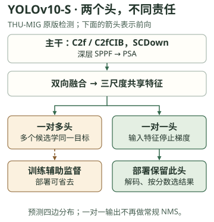

00 / 原方案解决了什么，为什么还要改
NMS 已经能够去重，
为什么还要摆脱它？
原方案的分工：网络充分预测，NMS 处理重复
密集检测器提供很多预测位置。一对多训练允许多个预测共同学习一个真实目标，有利于获得丰富监督，但这些预测也可能同时输出高分框。如果直接把它们都计为独立目标，同一颗螺丝就可能被报出好几次。
NMS 因此承担了必要的输出整理：常见做法是在同一类别内，按分数优先保留候选，再根据预测框之间的重叠程度抑制可能的重复项。它简单实用，让模型不必在训练时就完全解决“一物多个高分框”的问题。一对多加 NMS 是一套有效方案，不能仅因后来出现 NMS-free 就把它说成无效设计。
瓶颈：重复被处理了，成本仍留在推理路径里
- 去重需要额外时间。前向计算结束后，还需要筛选、排序与重叠判断。处理成本受候选数量、场景与实现影响；网络前向越快，这段额外耗时越可能成为值得优化的部分。只优化网络，不能自动消除它。
- 重叠规则不能直接判断是不是同一个物体。同一物体的重复框可能高度重叠，同类别两个真实物体的框也可能高度重叠。较低阈值容易多删，较高阈值又可能留重复，效果因此会受到规则和阈值的影响。
- 部署还要支持这一处理环节。NMS 需要相应的算子或插件；具体后端也可能涉及额外的数据搬运、同步或适配。许多平台已有高效 NMS 实现，所以不能笼统说它无法加速，但这一步仍要纳入完整执行图和耗时评估。
NMS-free 想解决的，首先是这段推理依赖
如果能通过训练，让模型本身更倾向于为每个目标给出一个有效预测，就有机会省去推理时基于框重叠的重复抑制，减少检测延迟并简化部署路径。
NMS-free 设计需要同时兼顾精度与效率。除了压低重复框，还要保留相邻的真实目标，并准确预测目标框和类别。模型需要更有区分性的特征与合适的监督，才能承担原来交给 NMS 的一部分去重职责。
这也解释了为什么不能直接删除 NMS：旧训练目标可能仍然鼓励同一目标的多个预测一起得到高分。删除去重后，重复依旧存在。下一步需要先改变监督关系；而改变监督，又会引出新的训练困难。
NMS-free 旨在降低包含输出处理在内的完整检测延迟。提速幅度取决于原来 NMS 的耗时占比、候选数量、硬件和实现，也要计入新方案引入的计算。NMS-free 不保证普遍大幅提速，也不能仅凭取消重叠抑制就断言拥挤场景一定更准。
问题定位对应：YOLOv10 论文引言；重叠抑制的定义见 Torchvision NMS 文档，阈值导致误删的讨论可对照 Soft-NMS 原论文。具体收益和精度代价回到本页的消融与边界验证。
从 YOLOX 的一对多理解，接到 YOLOv10 的新设计
常规 YOLOX 让多个预测共同学习一个目标，再通过 NMS 整理重复输出。它也实验过额外卷积、一对一分配和停止梯度的端到端变体，但指定实验中的精度与速度下降，因此没有纳入最终标准模型。
YOLOv10 针对丰富监督与少重复输出的取舍，系统设计一致双重分配。既有一对一组件提供了背景，不能据此把两套完整方案当成相同设计；Anchor-free 也没有自动消除重复。
01 / 先把选择对象说准确
匹配的是一个具体预测，
而不只是一个尺度。
多尺度检测头在不同空间分辨率的特征层上产生候选预测。以 640×640 输入为例，步长为 8、16、32 的预测层分别包含 80×80、40×40、20×20 个位置。样本分配比较的是这些位置产生的具体预测。
一对一分配会比较候选与真实目标的匹配程度，再决定哪个预测负责这个目标。匹配考虑空间先验、目标类别的预测分数和框的定位质量；选择对象是具体候选，而非整层特征。不同图片、不同目标和训练阶段，匹配结果都可能不同。
目标覆盖区域
真实框映射到特征坐标后可覆盖很多位置。这是几何范围，不等于所有覆盖位置都是正样本。
负责学习的预测
分配机制从候选中挑选正样本。每个正预测的框回归目标都是完整的真实框。
一对多分配给同一目标提供多个正预测，增加监督机会，也可能让多个预测对同一目标给出高分。推理时通常借助 NMS 抑制重复框。重复既可能来自同一尺度的相邻位置，也可能跨尺度出现。
同一个目标，三种训练组织方式
从多尺度输出中抽取 4 个候选框，编号 1—4 仅用于本页演示。Top-3 表示取匹配度量最高的 3 个候选，Top-1 表示取最高的 1 个。切换只改变监督方式，不运行模型训练或参数更新。
对应：论文 §3.1。作者实现将多尺度输出汇集后分配，不是给每个尺度选一个目标代表。
为什么需要先理解样本分配？
检测头先把多尺度特征变成规定格式的预测，再解码成框。样本分配建立预测与真实标注（Ground Truth，GT）的对应，构造监督目标与损失掩码；损失由此产生梯度，反向传播再影响共享参数。它分配的是预测责任，不直接把参数分给某个物体。
每个训练批次都会构造当前监督，但不代表所有版本都按当前预测质量选择正样本。先验框（Anchor）聚类、预测解码、正样本选择与损失组织各有职责。这些机制解释了一对一减少了哪些正监督，以及双重分配和一致度量各自弥补的问题。
按问题查看：特征张量与预测框的形状 · 分配如何进入损失 · SimOTA、动态 k 与 TAL · 各 YOLO 分支的区别。延伸页解释样本分配的基础机制与版本差异；本页聚焦 YOLOv10 的训练与推理设计。
02 / 让训练减少重复，再看新的困难
怎样让网络在训练时，
就朝少重复输出的方向学习？
原来的一对多监督允许多个预测共同学习一个目标，因此没有直接要求其中只有一个成为有效输出。若希望推理时不再靠 NMS 去重，就需要在监督中体现“哪个预测负责输出这个目标”。一对一分配是实现这一目标的一条路线。
一对一的目标是让一个真实目标只匹配一个正预测。被选中的预测学习完整框与类别；其他未匹配任何目标的预测，其前景分类得分受到压低的监督。它们并非被强制回归成零大小的框。
预测网络仍可在多个尺度产生密集候选。发生变化的是“哪些预测被鼓励输出这个目标”，而不是“模型提前知道目标数，然后只生成相同数量的框”。
新困难：去掉了多个正预测，也减少了学习机会
原来，同一个目标可以在多个预测位置提供正向的分类与定位监督。现在只保留一个正预测，其他本来有潜力的候选不再从这个目标获得同样的正监督。训练需要用更少的正样本机会学好目标，同时还要形成足够有区分性的特征，让一个预测突出、相近的多余预测被压低。
正预测减少 → 正样本监督更稀疏 → 特征学习和收敛可能受影响。
稀疏指每个目标提供的正样本监督机会减少，不是整张图片只剩一个位置参与损失。未匹配位置仍参与相应的分类监督，负样本并没有消失。
NMS-free 是一种训练与推理设计，不是“每张图片绝对不会重复或漏检”的硬保证。直接关闭旧模型的 NMS，不会自动获得这种输出能力。
03 / 让两个分支承担不同职责
训练保留丰富监督，
部署只留下需要的分支。

一对一输出与丰富正监督之间存在取舍：推理希望少重复，训练又希望保留多个正预测。仅用一对一可能损失训练效果；退回一对多，部署又会重新依赖 NMS。
如果把两种分配直接压到同一组输出上，一种监督希望多个预测都为正，另一种监督又希望只突出其中一个，目标就可能存在分歧。YOLOv10 用两套预测头分开承担职责，既保留辅助训练的路径，又不要求部署运行两套输出。
YOLOv10 使用双重标签分配：一对多分支为共享特征提供丰富监督，一对一分支学习用于 NMS-free 推理的输出。两个头都有自己的预测参数，共用主干与特征融合网络产生的多尺度特征。
前向路径与梯度路径
切换训练与导出部署，查看实际保留的职责。这里的结构图不模拟网络训练。
ONE-TO-MANY
一对多检测头
官方分配器配置 Top-k = 10
分类 + 框回归 + 分布焦点损失（DFL）
梯度：更新一对多头，并回传共享网络
导出推理图不需要这条分支。训练时获得的共享参数仍然保留。
ONE-TO-ONE
一对一检测头
代码核对点：v10Detect.forward 中，一对一分支接收 xi.detach()。这会阻断该分支到共享特征的反向梯度，但仍允许训练一对一头自身的参数。
一对一头读取由一对多监督训练的共享特征，再学习自己的预测参数。两套检测头的权重独立；在该实现中，一对一分支的损失不直接更新主干与特征融合网络。
上述停止梯度路径仅适用于所核对的双分支实现，并非所有一对一方法的固定要求。仅采用一对一训练的独立基线仍需训练共享特征，不能直接套用双分支的梯度路径。
这种协作不要求用显式蒸馏损失把一个头的输出复制给另一个头，也不是推理时把两个头的结果融合。部署时采用的是一对一分支。
04 / 双分支还需要协调选择偏好
都在学习同一目标，
也可能偏好不同预测。
双重分配补充了监督数量，但没有自动保证两个分支认可同样的最佳预测。共享特征主要由一对多分支训练，一对一分支又要利用这些特征产生最终输出；如果两者对“谁应该优先输出这个目标”的判断不同，丰富监督与部署分支的需求就可能不够协调。
分类分数高的预测，框未必最准。如果一对多更看重定位，一对一更看重分类，两者就可能选中不同的最佳候选，并分别给予较强监督。需要协调的不仅是正样本数量，还有两条路径对优先候选的判断。
两套检测头的预测参数独立，一对一分支的输入又经过停止梯度处理。因此，需要协调的是特征训练分支与部署预测分支的监督偏好，而非同一个输出上的冲突标签，或两分支在共享层直接对抗的梯度。
先统一“什么预测更好”，再决定选几个
因此，YOLOv10 希望一对一选中的预测，同时也是一对多最认可的候选。它保留两种分配数量的区别，约束的是比较候选时所采用的度量。
论文使用同时考虑分类和定位的匹配度量：
匹配分数用于比较具体候选，由分类与定位共同决定。选中某个候选，只确定该预测对当前目标的监督责任，不会把整个尺度指定为该类目标的专属预测层。
保持同一组预测，只改变匹配规则
这是论文分析所采用的“两个头有相同预测”对照情形，用来隔离度量的影响。真实训练中两头的预测会逐渐不同，并不保证始终选中同一位置。
窄屏下可横向滚动表格，查看匹配分数与排序。本例 s 均为 1；一对多 Top-3 仅为演示设置，官方训练配置并非 3。
| 候选框 / 预测步长 | 分类 p | 定位 q | 一对多 m | 一对一 m | 两头排序 |
|---|
交并比（IoU）衡量两框的重叠程度，CIoU 在此基础上加入中心距离与长宽比惩罚。示例框同中心、同长宽比，改变框尺寸来得到指定 IoU，因此这些惩罚项为零。计算未模拟网络更新、完整 TAL、数值容差及多目标冲突，条形值也不是最终预测置信度。
一致性为什么能缓解监督差距？
一对多分配不只是给所有正样本统一贴上 1。任务对齐学习会根据匹配质量生成分类软目标，更优的正预测通常得到更强的目标值。一对一若选中了另一预测，两种监督就会有偏差。
论文在两头预测相同的分析条件下，把回归目标视为一致：匹配到同一目标的预测，回归的都是同一个真实框。重点分析的是分类监督差距。让一对一选中一对多的最佳正预测，可以使文中定义的监督差距最小；这不意味着两头全部标签相同。
mo2o = mo2mr下标 o2o、o2m 分别表示一对一、一对多，r 是正比例系数。在相同预测、相同空间先验下，正幂变换保持排序，因此最佳候选不变。α、β 应同比例变化；只随意改其中一个并不保证排序一致。默认 r = 1，两头都用 α = 0.5、β = 6。
展开：示例中的分类软目标怎样计算？
单目标示例用 u* 表示本分支所选正样本中的最高定位质量。正预测 j 的一对多目标按 t_m,j = u*_m × m_m,j / max(m_m) 归一化，未选中预测为 0。一对一只保留最佳预测 i，该预测目标为自身的定位质量 t_o,i = q_i，其他预测为 0。这里按官方 TAL 的分支内正样本归一化作简化计算，不计算论文的 1-Wasserstein 距离，也不声称复现完整数学推导。
在一致、相同预测的条件下，最佳候选对齐。即使如此，其余一对多正样本仍有非零目标，而一对一对应目标为零，所以是缩小监督差距，不是消除一切差异。实际 TAL 的归一化与多目标冲突需要结合完整代码。
论文以 IoU 表述定位项；核对的官方 TAL 实现使用截断到非负的 CIoU。不要把这项训练匹配质量，与 NMS 比较两个预测框的 IoU 阈值混为一谈。分配与归一化代码
两个头都用了 Top-k，并不意味着它们已有同一排序。一致性约束的是匹配度量的偏好；也不能由这个公式保证真实训练中两个头的预测永远相同。
05 / 把分配落到监督上
分配决定监督对象，
损失指导它怎样预测。
仅仅选出正预测，还不会自动让分数和框变好。网络既要学准正预测的类别与位置，也要降低未匹配位置的多余前景响应。因此，需要把分配结果变成具体的监督目标，再通过损失更新参数。
作者代码中，一对多和一对一分别调用检测损失，主要包含分类、框回归与 DFL。两个分支损失相加；分类、定位、DFL 各自还使用配置中的权重。
分类监督
匹配的正预测使用与质量相关的类别软目标；未匹配位置的类别目标为零。分类损失覆盖预测集合，帮助压低多余前景响应。
位置监督
对匹配正预测计算框回归和 DFL。未匹配预测不被要求回归成零框；少一个正预测，减少的是相应正向位置与类别监督机会。
YOLOv10 检测头没有独立的目标性评分（objectness）输出，背景由分类项监督。YOLOX 则分别设置目标性、类别与框回归损失，两者的输出与损失组织不同。
官方分配配置分别是 tal_topk=10 和 tal_topk=1，两者采用相同 α、β。Top-k 是候选选择配置，不是保证每个目标最终恰好拥有固定数量的正样本；空间筛选与多目标争用还会影响最终匹配。
核对：v8DetectionLoss、v10DetectLoss。Top-1 方式不同于必须引入匈牙利全局匹配；论文比较后选择了前者。
06 / NMS-free 不等于没有输出处理
部署去掉重复框抑制，
仍要把预测变成可用结果。
训练阶段保留两个头，是为了补充监督，不代表部署也需要两个头。如果推理仍运行一对多分支并处理其重复框，就没有兑现这条设计希望省去的成本。另外，检测头输出的参数也不能直接当作最终结果，还需要解码、选择与坐标映射。
推理时只采用一对一分支的输出，不再按预测框之间的 IoU 执行 NMS 去重。原来一对多分支对共享特征的训练收益，已经体现在保留下来的参数中。
作者导出路径中的 v10postprocess 先按每个候选的最高类别分数筛选，再在候选—类别分数中选 Top-k，默认最多输出 300 项。这里按分数选择，不计算预测框之间的重叠来抑制。业务侧仍可按阈值过滤、映射原图坐标，输出上限也可能影响极密集场景。
训练时的匹配 Top-1，是借助真实标注生成监督；推理时的 Top-k，是没有真实标注时按预测分数选输出。二者发生阶段和职责不同。
展开：为什么直接测 PyTorch forward，可能得不到论文的速度？
作者代码在非导出模式下仍会计算一对多分支，并返回额外结果。导出部署图可以去掉不需要的分支。项目 README 明确提醒，基准测试应使用导出格式，否则额外的 cv2 / cv3 运算会使速度比较失真。这里的 cv2 是模块属性名，不是指 OpenCV 调用。
比较延迟时，需要同时说明硬件、精度、输入、batch、是否包含后处理与 I/O。不能把“模型前向延迟”和“完整检测延迟”直接混成一列。作者的基准测试提醒；v10postprocess。
“NMS-free”减少了对手工重叠抑制与相应阈值的依赖，但不保证零误检、零漏检或完全不重复，也不意味着取消所有后处理。IoU 仍可用于训练的匹配与回归。
07 / 机制解释之后，再看实验能支持什么
双重分配补回精度，
但不是没有代价的替换。
双重分配的存在，说明作者针对监督稀疏提出了方案。这个方案是否有效，还需要对照实验；不能仅因为设计了辅助分支，就证明 NMS-free 在所有方面更好。
| 训练与推理方案 | COCO AP | 延迟 / ms |
|---|---|---|
| 仅一对多，推理用 NMS | 44.9 | 7.07 |
| 仅一对一，推理免 NMS | 43.4 | 2.44 |
| 双重分配，推理用一对一 | 44.3 | 2.44 |
AP 表示平均精度。表中数值由论文报告，独立于匹配度量演示，拖动候选分数不会改变它们。论文采用 T4、TensorRT FP16 的速度设置；端到端基准使用 COCO 验证集、批次大小 1，NMS 方案附加 efficientNMSPlugin，忽略输入输出（I/O）开销。具体数值不可直接推广到所有平台。
展开：一致匹配度量的消融，是否也支持这一解释？
| 一对一 α / β | 关系 | COCO AP |
|---|---|---|
| 0.5 / 2 | 不同比例 | 42.7 |
| 0.5 / 6 | 相同度量，r = 1 | 44.3 |
| 1 / 12 | 同比例，r = 2 | 44.3 |
这些是作者在特定实验设置下的消融证据。交互示例只解释“为什么排序可能改变”，不能从几组候选计算出整个数据集的 AP。
这条路线获得什么
- 部署不需要 NMS 的预测框重叠抑制，简化执行图。
- 一对多监督辅助特征学习，一对一分支服务于推理。
- 统一匹配偏好，缓解两分支的监督差距。
仍需承担什么
- 训练增加一个分支及其匹配、损失开销。
- 一对一依赖有区分性的特征，小模型仍可能有精度损失。
- 性能受数据、输入、部署实现和输出上限影响，需实际验证。
展开：训练成本与剩余精度差距
论文附录的 8 张 RTX 3090、500 epoch、M 模型测试中，仅一对一为 26.7 小时，双重分配为 29.1 小时。把仅一对一延长到约相同训练时间后，论文仍报告其 AP 低于双分配。这个对照支持辅助监督的价值，不表示增加分支没有成本。
论文也报告，最终 NMS-free 模型与同架构的一对多 + NMS 训练版本仍可能存在差距，尤其在较小模型上。因此，应分别评价“取消 NMS 的训练策略”和“网络结构优化”的贡献。
对应：论文 §4.3、表 3 / 表 4，以及附录 A.4 / A.9。原文部分交叉引用编号存在错位，本页按实际表标题和数据定位。
08 / 网络结构与前向效率
NMS-free 优化输出组织，
结构设计继续优化前向计算。
YOLOv10 以 YOLOv8 为基线，同时改进标签分配与网络结构。论文的另一条主线是整体效率—精度设计；这些结构改动与 NMS-free 训练设计承担不同职责，需要分别结合机制与消融评价。
原因在于：取消 NMS 只减少了部分输出处理，网络前向本身的计算冗余仍然存在；若模型表达不足，分类与定位也不会因为没有 NMS 就自动变准。因此，作者另行检查前向计算，把预算从冗余位置转向更有价值的表达。
轻量分类头：减少检测头中的计算冗余
分类与回归沿用相近的结构，不意味着它们需要同样的计算预算。作者发现分类头开销较大，而误差分析显示定位仍是重要瓶颈，因此先考虑减少分类侧的冗余。
采用深度可分离卷积等轻量设计，把更多计算预算留给必要的表达，并用实验检查精度是否受到损害。它改变前向成本，不直接规定哪个预测是正样本。
空间—通道解耦下采样：分开处理通道与空间变化
标准步长卷积同时混合通道并降低空间尺寸，计算开销较大；直接压缩空间又可能损失信息。需要在下采样效率与信息保留之间作取舍。
这里先用逐点卷积调整通道，再用逐通道卷积降低分辨率，以减少开销并尽量保留信息。它与“分类和定位解耦头”不是同一种解耦。
秩引导模块与 CIB：把紧凑块放在更合适的阶段
不同阶段的信息冗余不同，统一使用同一种基础块，可能在某些阶段付出不必要的计算成本；无差别换成轻量块，又可能伤害需要表达能力的位置。
作者利用卷积权重的数值秩分析阶段冗余，以紧凑倒置块 CIB 替换部分阶段的基础块，并通过性能验证决定替换范围。它是设计阶段的结构选择，不是每张图片推理时动态计算秩、切换网络。
大核卷积：在合适位置扩大感受野
模型需要足够的上下文来辨别目标。扩大卷积核能增加感受野，但若把大核铺到所有阶段，尤其是高分辨率阶段，又可能增加明显开销；收益也会随模型能力变化。
深层 CIB 使用较大的逐通道卷积，并在训练时加入可重参数化分支辅助优化。大核带来的表达收益与模型规模、特征分辨率有关；论文没有把大核无差别加到所有阶段，也不主张所有模型规模都有相同收益。
PSA：只让部分通道承担自注意力计算
为增强长距离关系建模，可以引入自注意力；但直接在全部通道和高分辨率特征上使用，计算与显存开销又会影响实时检测。因此，需要控制注意力的作用范围。
将通道分成两部分，让其中一部分经过自注意力与前馈计算，再与另一部分融合。放在低分辨率的深层位置，以较低开销引入全局建模。它改善特征表达，并不替代标签分配或 NMS-free 的监督设计。
本节概述结构模块的职责与改动位置，详细设计见论文 §3.2。模型的最终提速来自训练推理设计与结构优化的共同作用，不能全部归因于取消 NMS。
09 / 将解释与证据放在一起
对应原文与实现
- 先读引言中关于模型前向与 NMS 后处理的段落，确认原方案的瓶颈与改进目标。
- 再读 §3.1 的 Dual label assignments 与图 2(a)，对应一对一的训练困难和两个分支的职责。
- 继续读 Consistent matching metric，对照本页的排序和软目标演示；附录 A.2 给出进一步推导。
- 查看 表 3、表 4，分别验证双重分配和度量一致性的作用。
- 结构设计进入 §3.2，与 NMS-free 分开评价，再合起来看整体收益。
- YOLOv10 英文原文 · §3.1；英文 PDF
- 论文原文：YOLOv10: Real-Time End-to-End Object Detection，2405.14458v2。作者 Ao Wang 等，NeurIPS 2024；原论文 CC BY 4.0。本页为非官方中文解释与独立教学图解。
- THU-MIG / yolov10 作者仓库：检测头与 detach、双分支损失、TAL 与匹配质量、推理输出选择。核对日期：2026-11-02；链接指向 main，后续实现可能变化。